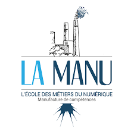
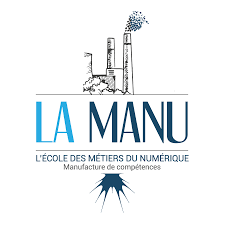
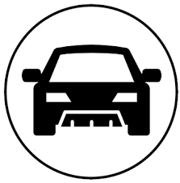

2021
 PHP / Symfony La Manu - Versailles

Après 14 ans au service de Blizzard entertainment en tant que Customer Support Representative, j'ai eu l'opportunité de faire une reconversion dans le développement web.
De ces années dans le support client j'ai acquis le plaisir d'aider le client, et la capacité à comprendre son besoin, ert trouver des solutions parfois très créatives pour l'assister.
Refonte du site proposant des solutions de système d'accès payant via des tripodes.
Pour cela j'ai réutilisé des couleurs de l'entreprise. Pour le reste, j'avais la liberté de faire à mes goûts tout en gardant une cohérence avec la concurrence. J'ai également amélioré le logo et rédigé l'ensemble des contenus.
Outils utilisés : WordPress et plus précisément Elementor / OceanWP.
Les plus du site :
Rédaction de l'ensemble des contenus du site après étude du marché et recherches sur les tripodes.
Utilisation du CSS pour changer l'apparence du formulaire en créant le dessous arrondi, l'effet de persistance du fond en gris après avoir quitté le champ et changement de couleur de la ligne de bas de champ.
Utilisation d'une fonction JavaScript, de CSS et une touche de modification du fichier functions.php du thème enfant permettant au scroll de réduire la taille de la barre de navigation et changer le logo grâce à un jeu d'ajout / suppression de classes.

Cliquez sur l'image pour acc√©der au site üòä
Création du site de l'Association Innovalliance / Apron agissant contre l'exclusion numérique et proposant également des animations dans leur FabLab.
J'ai eu une quasi-totale liberté pour la réalisation de ce site. Mon cahier des charges était de créer uniquement 2 pages, une pour l'ensemble des informations et la seconde pour les dons.
Cette liberté s'est traduite par la conception intégrale du site, la définition des couleurs, l'élaboration du logo ainsi que la rédaction des contenus.
Outils utilisés : WordPress et plus précisément Salient / WPBackery.
Les plus du site :
Création d'une page de dons : recherche du plugin adéquat et configuration
Utilisation du CSS pour créer un effet au survol de la souris sur l'ensemble des boutons du site.
Création d'un carrousel où toutes les vignettes ont la même taille et sont centrées de la même manière.
Adaptation d'un site Anglais en Français pour le marché français (partenariat) sur la gestion des risques financiers et les solutions associées.
Maintien de la charte graphique initiale, adaptations pour le besoin du site, réalisation des logos et traduction des contenus.
Outils utilisés : WordPress et plus précisément Elementor / OceanWP.
Les plus du site :
Utilisation de la fonctionnalité native de WordPress pour créer un effet parallax à partir d'une image.
Un projet très riche avec de nombreuses pages.
La création du logo et le choix de partir sur un design très sobre en noir et blanc.

Cliquez sur l'image pour acc√©der au site üòä
Création d'un site e-commerce avec utilisation de WooCommerce.
J'ai eu une totale liberté pour le réaliser. Pour ce site j'ai également été chef de projet. J'ai ainsi planifié les différentes tâches à réaliser par mon collègue, supervisé les rendus et amélioré ces derniers en fonction des objectifs établis au début du projet.
Outils utilisés : WordPress et WooCommerce et plus précisément Salient / WPBackery.
Les plus du site :
Utilisation de WooCommerce avec structuration et création de produits et de catégories.
Utilisation de leaflet pour éviter l'utilisation de Google Maps.
Modification du formulaire de contact en fonction des actions de l'utilisateur : cadre grisé au survol, trait bleu si le champ est sélectionné et trait rouge si il a été sélectionné mais non rempli avec du CSS.
 PHP / Symfony La Manu - Versailles
Développeur Intégrateur Web Ifocop Montigny-Le-Bretoneux
Formations internes Blizzard Entertainement - Versailles
Management Système Qualité Ifocop - Eragny
 Permis de conduire